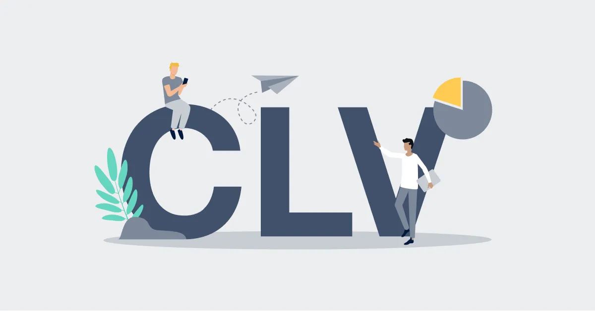
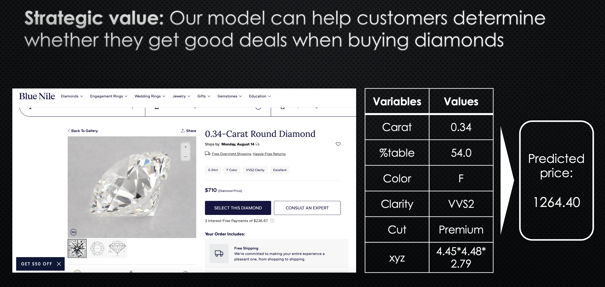
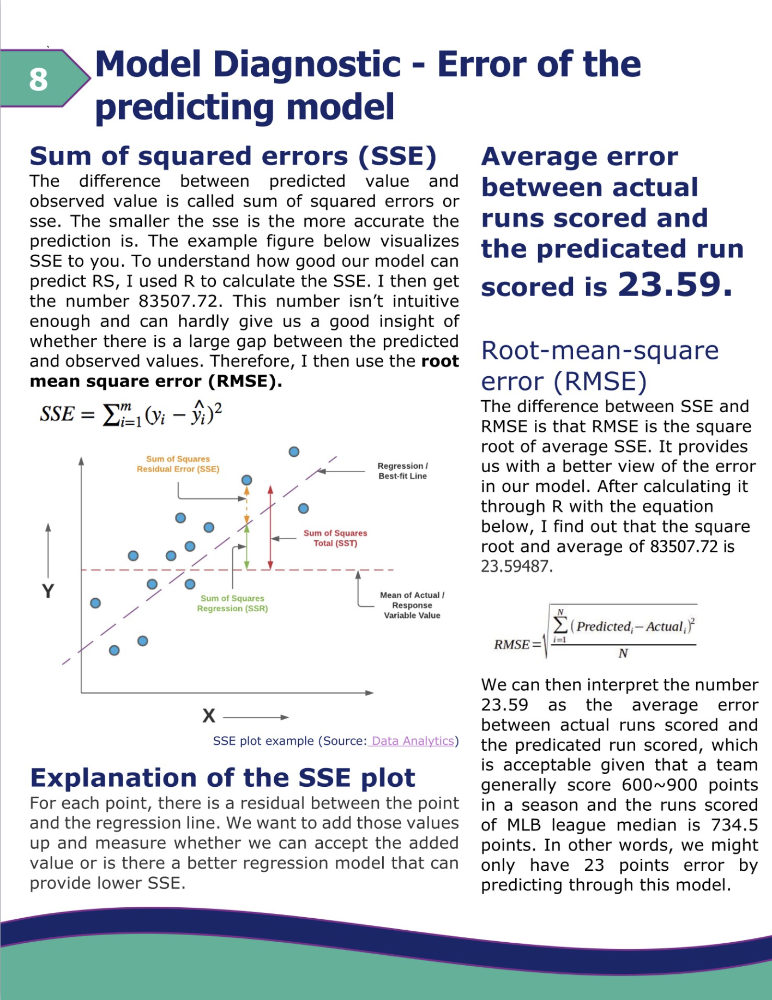
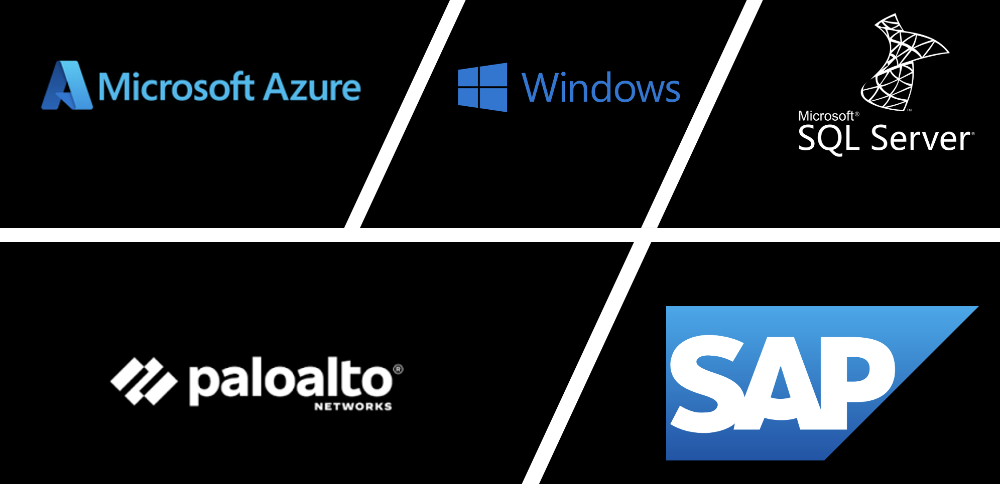

Living My Best Life

Hello friends! My name is Yi Kai, or you can call me Steven. I was born on February 14, 2000 (Yeah! Valentine's Day!!) and I grew up in Taiwan. In June 2023, I moved to Seattle to begin my master's degree at the University of Washington. Go DAWGS!!
I love learning and building new things such as this website and I enjoy hiking. (Mount Rainier, Lake Serene, Lake 22, Snake Lake Loop Trail, you name it!) Additionally, I used to played on the high school baseball team and baseball has always been a passion of mine. I grew up idolizing Seattle Mariners legend Ichiro Suzuki. His passion for what he loves to do always inspires me to challenge myself. So the day I saw him in person at T-Mobile Park, I almost had tears in my eyes, it was one of the most unforgettable days of my life!

By the way, I once traveled from Seattle to Chicago by train with my friend, which took us 48 hrs! We passed through Washington, Idaho, Montana, North Dakota, Minnesota, Wisconsin and to Illinois. (Coolest experience of my life so far)

Woke up in front of this breathtaking view on train!

The well-known Chicago Theatre
The book that I have been enjoy reading recently, Lean Analytics. I learn how to design meaningful metrics, and I utilize those concepts into my projects.
I always keep in mind a quote from my favorite talk show host, Conan O'brien : "No one gets exactly what they think they're going to get in life. But if you work really hard and you are kind, amazing things will happen."
I love making tacos too! Wherever you are right now, I wish you all the best and good luck with what you're passionate about !!
Your friend,
Yi-Kai
Seattle | Washington | 2023/10/04
Gmail: yikai0214@gmail.com
Phone number: (206) 403-6980
Menu
1. Customer Centricity: Unveiling Predictive CLV, Repeat Purchases and RFM Patterns with Python and Tableau
2. Amazon Air Analysis: Tableau Dashboard Powered by AWS ETL Data Pipeline
3. Diamond Price Forecasting: Harnessing SQL and R
4. Seattle Mariners Win Projection: R, Logistic, Linear Regression
5. Deloitte IT Inspection: Collaborating with HTC for MSSQL Database Optimization
Predict Customer Insights
with Python and Tableau

When
Project timeline: Dec.2023
Dataset time period: Aug.31.2018 ~ Sep.1.2019
Please check documentation at @Medium
Why
Customers are heterogeneous. Companies should treat customers as individuals at different levels rather than as a homogeneous whole and
tailor customized marketing campaigns, thus ensuring a more effective and targeted approach to engage and maximize value from diverse customer groups.
What
1. Used Lifetimes python package to classify e-commerce customers to 4 groups with purchasing recency, frequency and monetary value.

2. Used Lifetimes python package to predict e-commerce Customer Lifetime Value (CLV) in the future time period, repeat purchase, inventory level and 6 more predictive customer insights.

3. Visualized predictive customer insights into Tableau dashboard.
 Please check dashboard at @CLV Tableau
Please check dashboard at @CLV Tableau
4. Predict inventory stock level for regional warehouse

5. Designed customer-centric and data-driven strategies for each customer segment.
- Example: ML-Generated Discount Offer Email. When the algorithm identifies an ‘At Risk’ customer with recency exceeding 250 days and a low Predictive CLV, an automatic discount offer email is triggered to prompt the next purchase. To boost profitability through such algorithm, consider willingness to pay (WTP), Economic Value to the Customer (EVC), and geographical factors.
- Metrics: Lifetime value impact, email click-through rate, conversion rate, quarterly customer growth rate

Amazon Air Analysis with SQL,
Tableau and ETL data pipeline

When
Project timeline: Aug.2023 ~ Sep.2023
Dataset time period: Aug.31.2018 ~ Sep.1.2019
Why
Have you ever wondered how Amazon organizes to deliver 1.6 million packages per day, and how it achieves two day or one day or even overnight delivery?
Well, I am totally intrigued by the complex logistics and innovations behind it. So, I made a Tableau dashboard to dive deep into the operations of one of Amazon's most critical teams, Amazon Air. Most importantly, I designed strategic suggestions to assist Amazon Air go above and beyond its customer expectation.
What
Amazon Air was established in 2015 to support long-distance delivery from fulfillment centers to regional customers, significantly reducing the waiting time for Prime customers and allowing Amazon to achieve its emphasized Customer Obsession goal.
Business goals
(1) Allowing Amazon Air's stakeholders to monitor on-time performances and total payload capacity, which are both key metrics for air cargo network monitoring
(2) Creating actionable insights and recommendations and not just gathering data
Insights
✨74.54% of Amazon Air's flights took off within 30 minutes of scheduled time
✨Total payload capacity grew 48.81% from 2018 to 2019
✨The route from Tampa International Airport to Cecil Airport (TPAVQQ) has the highest average delay time in departure at 620.5 minutes.
How
(1) Strategic Metrics: I placed a strong emphasis on designing metrics aligned with business goals. These metrics are not just informative but also actionable, comparable, and controllable, empowering the business to refine its decisions once anomalies are identified.

(2) Scalable ETL Pipeline: I've designed an ETL data pipeline that connects MySQL to AWS Cloud and Tableau. This not only ensures data security but also simplifies data management, making it more accessible for the business.
(3) Comprehensive Documentation: I've provided extensive documentation alongside in-depth analysis to facilitate user comprehension
Project challenges
(1) After defining the business goals of Amazon Air, I spent a week or 25% of the time brainstorming the metrics that are most important to the team and how to comprehensively translate them into tableau.
(2) Secondly, this is my first time using AWS to build an ETL data pipeline. Since I'm using a free trial account, there are data usage limits when I try to test the pipeline. Additionally, I considered whether the pipeline would be practical for actual business application.
(3) In terms of documentation and analysis, the most difficult part is to consider the analysis from the perspective of a stakeholder. I had never worked in the air cargo industry before, thus designing solutions from their perspective was really unfamiliar to me, but it was worth it in the end.
For more information, please check my dashboard at @Tableau Public
Please check my analysis and insights at @Technical Documentation
Please check my SQL code at @Github
Diamond Price Prediction
with MySQL and R
When
Aug.2023
Why
When making purchases on an e-commerce platform, numerous customers frequently pause and are not sure about if they are being accurately charged according to the seller's listed price. Thus, knowing the pain point of the customers, I led 4 master students from University of Washington Master of Science in Business Analytics program for designing solutions to such problem.
What
We decided to build a linear regression model that offers predicted prices, enabling customers to compare them with the actual listed prices.
Business Goal
By implementing this approach, sellers on e-commerce platform can enhance customer loyalty through a transparent selling mechanism, especially in product categories like diamond prices, where customers are particularly cautious due to the high cost involved.
How
(1) Used MySQL to clean and transform data into digestible format
(2) Utilized R to perform exploratory data analysis and visualized statistic attributes
(3) Ran regression model through Excel
(4) Compared the predicted price with actual price on Blue Nile, a diamond e-commerce
My contribution to the team
(1) Guided the team in planning analysis process
(2) Wrote MySQL code to manipulate data
(3) Made decision on the method for encoding categorical variables
(4) Presented findings and strategic value in a concise way during in-class presentation
Insights
✨High Adjusted R-square (a corrected goodness-of-fit, the closer to 1 the higher the model accuracy): our model achieved 0.9196 of adjusted r-square
✨Offer price comparing tool (as shown below)

Please check my SQL code at @Github
Baseball Prediction with R
When
Apr.2023 ~ Jun.2023
Why
If you love sports like baseball, basketball, football, or soccer, have you ever wondered how many wins your favorite team will have this season and what's the percentage of them advance to the playoffs?
In this project, I predicted my favorite baseball team, the Seattle Mariners, from these two perspectives. Furthermore, my model is so versatile that it predict for 29 other MLB teams, the data stream is automated, and my model is scalable.

What
The Seattle Mariners are a Major League Baseball (MLB) team located at T-Mobile Park in Seattle, Washington.
After playing for 162 games in regular season, the top 6 teams will advance to the playoffs, which start from Wild Card level to Division Series to League Series and finally to World Series.
Below is the playoff chart of 2022.

How
(1) Deploy linear regression, data visualization and R packages, including dplyr and ggplot2, to predict the Seattle Mariners' wins in 2023 season
(2) Apply supervised machine learning such as logistic regression and R to predict both Mariners' and MLB teams' probability of advancing to the playoff
Insights
✨ Predicted that the Seattle Mariners will get 96 wins or 59% of winning percentage into the 2023 season with a high-quality model, adjusted R-squared of 0.931 and a low sum-of-squares error (SSE)
✨ Structured 2 managerial implications through analytical perspective
Project challenges
Translating baseball concepts into meaningful inputs for linear and logistic regression models requires strong statistical knowledge and R programming skills.
So, I spent about 40% of my time figuring out what's the best code for my model and how to interpret baseball in statistics.

Sample page of technical documentation
Please check my R code at @Github
For more information, please check my analysis and insights at @Documentation
IT System inspection Project
with HTC
When
Mar.2023 ~ April.2023
Why
Assessed the accuracy, completeness, and reliability of data within HTC's IT systems, ensuring that data used for annual report and decision-making is trustworthy.
What
Extracted 1 TB of data log, evaluated configurations and interviewed with 6 stakeholders of the following systems:
- Cloud Service: Microsoft Azure
- Operating System: Windows 10
- Database: Microsoft SQL Server
- Network Security: Paloalto Network
- ERP(Enterprise Resource Planning): SAP

Who (Stakeholders)
- HTC (Customer): Global IT Director, Director of Network Security, Cloud Architect, Systems Manager, Database Administrator, Data Engineers
- Deloitte, Risk Advisory (Service Provider, me): Partner (Vice President), Project Manager, Senior Consultants
- Deloitte, Audit & Assurance (Customer, Request the Risk Advisory team to audit HTC's IT system data for financial reporting): Senior Managers, Senior Auditors
How
- Established trust with HTC's global IT leaders, data engineers and Deloitte's internal teams by being transparent in timeline and by responding to customers' requests in a timely manner.
- Providing 5 long term, smart and easy IT solutions for HTC by working backwards from its business goals.
Project Outcome
✨ Prevented HTC’s enterprise resource planning system from 2 unauthorized access by analyzing 1 terabytes of data log.
✨ Achieved 80% of solution acceptance rate from HTC by listening to customers need candidly.

 For more detail of my research report, please refer to: @Project on LinkedIn
For more detail of my research report, please refer to: @Project on LinkedIn